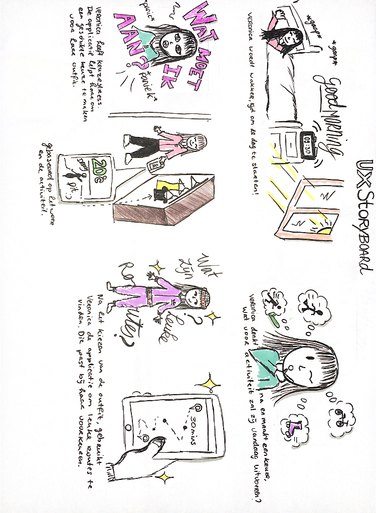

Actividay
Actividay is an app that helps improving your experience during your outdoor activity and motivates you to stay active.
Client: University of applied sciences, Amsterdam First year Team Project Time range: April - June 2020
problem statement
In the time of the pandemic, people are not feeling motivated to workout, one of the main reasons is because of the closed gyms and since most of people don't have the equipment to workout at home, is the only option for people to stay active is to do outdoor activities such as jogging and cycling, which is for some people not the most exciting thing to do.
the goal
The goal of the app is to make the users feel motivated to workout by improving and make their workout and the experience more fun and interesting during their outdoor activities.
how does it work
Actividay is an app that helps improving your experience during your outdoor activity and motivates you to stay active. By letting the app pick out the best clothes for you to wear for your activity by taking the weather and forecasts in account. The app also provides the best routes for you to follow per location and it also makes sure that you come across hotspots and sightseeing points on your route, it also keeps track of your actions and achievements. The app also allows you to connect with Spotify so you can listen to music that enhances or liften up your mood
my responibilities and skills
My responsibility during this project was to take charge of the project. I make sure that everything is going smoothly by communicating a lot with my team. Benchmark practices after every work session and feedback sessions. Making sure to always be a step ahead of my team, by knowing what's next, plan ahead, informing my team about the plan and possible actions we could take. The skills that I put into practice during this project was concepting, creating content, researching and creating the prototype.
the design
An app that improves your outdoor activity experience, with choosing the right set of clothes, music and routes to follow.
Wireframe
We created our own versions of the interface design, which we later put together in a low-fi wireframe.
Storyboard
Style sheet
Interface
States
Actividay will guide you through every interaction by first use
the app
actividay has everything needed for you to have the best workout and results.
the user can either creating a whole new route with new added elements or pick the elements individually to enhance their workout
My input on this project
My Input during this project was mostly research and creating the prototype. The things I did:
- Ideation
- Concepting
- Researching (field research)
- Brainstorming
- Sketching
- Creating and deciding on the content
- Creating the style guide
- Creating the prototype (1/4)
- Usability testing (method: talk out-loud)
- Creating the zero states
- Doing the finishing touches